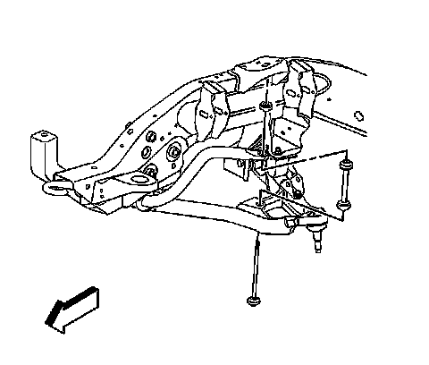

Stabilizer Shaft Link Replacement (2500 Series)
Stabilizer Shaft Link Replacement (2500 Series)
Removal Procedure
1. Raise and support the vehicle. Refer to Lifting and Jacking the Vehicle.

2. Remove the nuts from the link bolt assemblies.
3. Remove the link bolts.
4. Remove the link assemblies.
Installation Procedure
1. Support the lower control arms at curb height.
2. Perform the following procedure before installing the bolts:
^ Remove all traces of the original adhesive patch.
^ Clean the threads of the bolt with denatured alcohol or equivalent and allow to dry.
^ Apply threadlocker GM P/N 12345382 (Canadian P/N 10953489).
3. Install the link assemblies.
4. Install the link bolts.
Notice: Refer to Fastener Notice.
5. Install the nuts to the link bolt assembly.
Tighten the nuts to 23 N.m (17 lb ft).
6. Lower the vehicle.